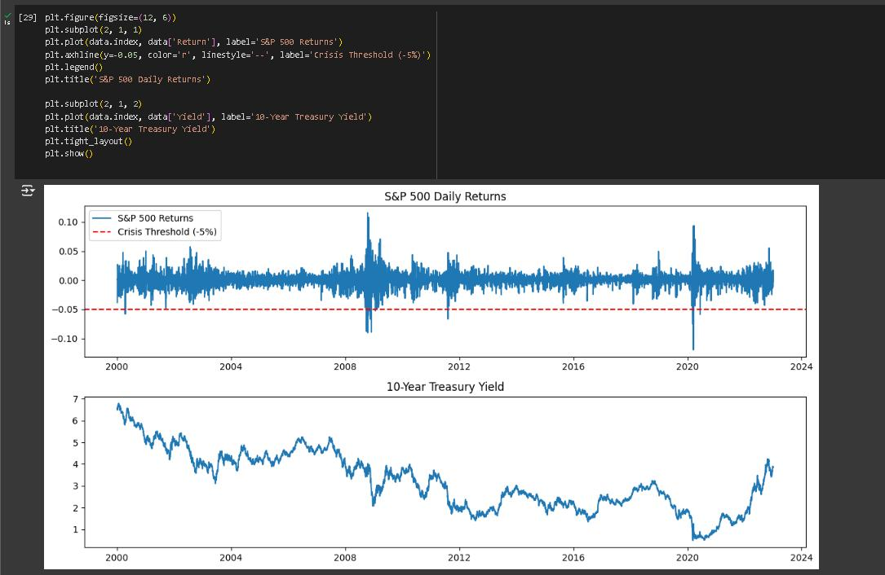

Python | Portfolio Analysis
Analysed historical stock data using Python to evaluate portfolio performance and risk metrics. Built a model to calculate returns, volatility, and Sharpe ratios, providing insights into optimal asset allocation.
Tools: Python (Pandas, NumPy, Matplotlib)
View Projects